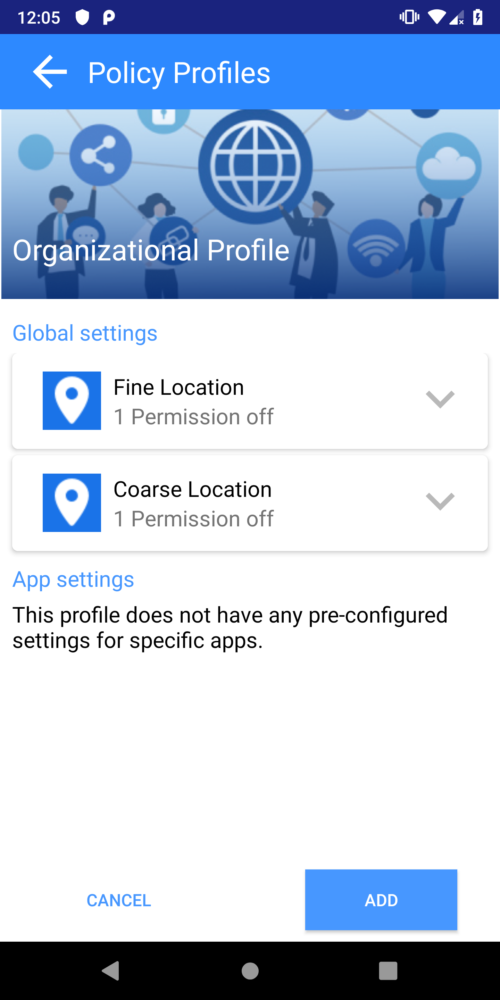

Implemented version of Privacy Profiles in Policy Manager.
Quick settings and user settings are focused on protecting the privacy of an individual. Organizations such as a military base, or employees of an embassy have an interest in protecting everyone's privacy. Imagine the location data of all travelers being leaked to someone with malicious intent. Organizational profiles are intended to be an easy mechanism for users to activate a set of pre-configured privacy policies from a trusted source.
Every user has a privacy profile by default, which is used any time the policy manager is interacted with. Users may add a profile on the profile screen after navigating through the menu on the homescreen. Once a privacy profile is enabled, its settings are enforced with the highest priority. It overrides any existing policy a user has configured, including quick settings.
Organizational profiles are currently only a prototype in the policy manager. You can add a dummy profile by scanning any QR code. Ideally, there will be a process set up for the policy manager to find policy profiles. Additionally, there should be more stringent methods for allowing users to switch between different profiles. As it is implemented, users may switch between profiles as they please. In more serious situations, users should only be allowed to disable an organizational profile if they are authorized to.